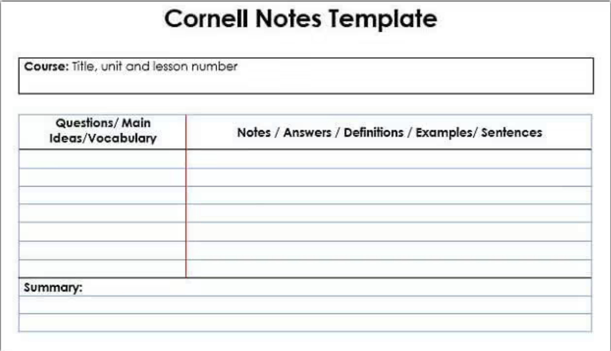

Plan gently
Turn deadlines and recurring commitments into a schedule that leaves room to breathe.
Build a realistic routine that leaves space for your classes, work, and the moments you actually want to enjoy.
Explore a few ways to study and plan with less stress, more intention, and a rhythm that feels realistic.
Turn deadlines and recurring commitments into a schedule that leaves room to breathe.
Use methods that help you retain more and review less in a way that actually sticks.
Build a routine you can keep, even when life gets busy or your energy doesn’t feel perfect.
Start with the things that already fill your calendar, then add assignments in a way that feels realistic.
Classes, work, practice, family time—anything with a set time.
Estimate the total time, then let the planner split it into focused sessions.
We'll keep sessions short and leave breathing room.
Your repeating week makes it easier to spot open time.
Studying is more than rereading. Use an active strategy to retain more and feel less overwhelmed by the volume.
Small, focused sessions help your brain hold onto information better than one long cram session.
Study for 25 minutes, then take a 5-minute break. Repeat for 4 rounds, then take a longer pause. This keeps your attention fresh and stops burnout before it starts.
Close the notes and try to explain the idea from memory. Then check what you missed. This is stronger than simply re-reading pages.
Review knowledge on a schedule: once the same day, then again in a few days, then again a week later. The spacing helps memory stick.
Keeping notes organized isn't about perfection—it's about making review easier later.
Structure your notes so they help you study, not just record information.
A layout designed to make notes easier to review. Keep the main ideas on the right, summary questions on the left, and a short recap at the bottom.

Follow a simple process so the notes become useful later.
Big tasks can feel less overwhelming when you break them into smaller decisions and tiny next steps.
Rather than chasing everything at once, choose the few steps that move progress forward.